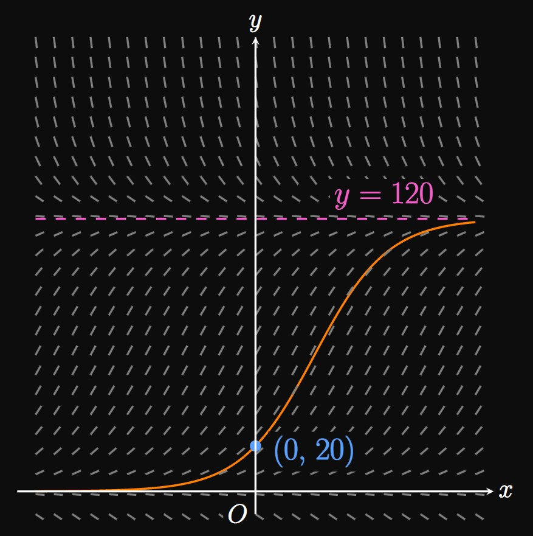

Sketch a slope field for the differential equation
\[\deriv{y}{x} = \frac{1}{3} y \par{1 - \frac{y}{80}} \pd\]
Draw the solution curve that satisfies \(y(0) = 50.\)
Sketch a slope field for the differential equation
\[\deriv{y}{x} = -0.2 y \par{1 - \frac{y}{90}} \pd\]
Draw a solution curve and label the inflection point.

Figure 9 shows a slope field
produced by the differential equation
\[\deriv{y}{x} = \frac{1}{20} y \par{1 - \frac{y}{120}} \pd\]
Consider the solution curve passing through the point \((0, 20)\)
with a horizontal asymptote of \(y = 120.\)
Determine the carrying capacity of the solution curve.
Identify the growth constant of the logistic function.
At what value of \(y\) does the curve have an inflection point?
Find the identity of the solution curve.
For each of exercises 11–15, solve the initial-value problem.
Let \(f\) be a function that undergoes logistic growth and satisfies
\[\andFour
{\lim_{x \to -\infty} f(x) = 0}
{f(0) = 40}
{f(1) = 100}
{\lim_{x \to \infty} f(x) = 2000}
\pd
\]
Determine the identity of \(f.\)
Students enter the school cafeteria according to the differential equation
\[\deriv{y}{t} = 0.5 y \par{1 - \frac{y}{400}} \cma\]
where \(t\) is time measured in minutes since the start of the lunch block.
What is the maximum rate at which students enter the cafeteria?
The height of a plant in a drought exhibits logistic decay according to the differential equation
\[\deriv{H}{t} = -0.3 H \par{1 - \frac{H}{60}} \cma\]
where \(H\) is measured in inches and \(t\) is measured in days since the drought's onset.
What is the maximum rate at which the plant's height is decreasing?
A baby goat is born with a weight of \(10\) pounds.
Three months later, the goat weighs \(40\) pounds
and is expected to weigh \(160\) pounds as an adult.
Find a logistic growth function to model the
goat's weight as a function of time.
A newborn wolf weighs \(1\) pound.
Four months later, the wolf's weight has increased to \(30\) pounds.
As an adult, the wolf is expected to weigh \(90\) pounds.
Determine a logistic growth function to model the
wolf's weight as a function of time.
In a savanna, a pack of \(15\) cheetahs is discovered.
Two years later, the population has increased to \(45\) cheetahs.
After a very long time, the population remains stable at \(90\) cheetahs.
Use a logistic growth function to model the population of cheetahs
with time.
An ecologist discovers a population of \(250\) monkeys in a jungle.
Upon revisiting the biome \(4\) years later, the ecologist observes that the population has doubled.
She predicts that the population will level off at \(2000\) monkeys.
Find a logistic function to model the monkey population over time.
An introductory calculus class contains \(300\) students and is taught in a lecture hall.
At the beginning of lecture, \(250\) students are present.
After \(2\) minutes, \(30\) additional students have joined the lecture hall.
Using a logistic growth model, determine how many students are in the lecture hall after \(5\) minutes.
As a society industrializes, women tend to work technical jobs and have fewer children.
This societal transition often results in a stagnant population growth,
which can be modeled by a logistic growth model.
Suppose that in the year 1970, City X has a population of \(45000.\)
Amid industrialization, the population grows to \(54000\) in 1990
before remaining stable at \(55000.\)
Determine a logistic growth function for the population.
In an \(1800\)-student school,
a virus initially infects \(50\) students.
The following day, \(10\) more students are infected.
Administration plans to close the school when the infection
rate reaches its highest.
Assuming a carrying capacity of \(1000\) students, after how many days from the onset of the disease should
the school be closed?
On social media, a Story
is a post visible to followers for \(24\) hours.
A Story is posted to a personal account with \(600\) followers,
half of whom are active.
The story receives \(40\) views within an hour and \(200\) views within \(12\) hours.
Using a logistic growth model, estimate how many views the story will receive after \(16\) hours.
An \(800\)-student school conducts an evacuation drill,
in which all students must exit the building to a designated area.
Within \(2\) minutes of the drill, \(700\) students have exited the building.
After \(5\) minutes, administrators discover that \(5\) students
still remain the building.
Determine a logistic decay model for the number of students inside the building
as a function of time after \(2\) minutes.